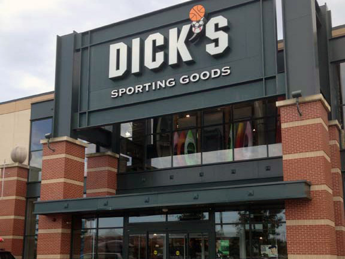
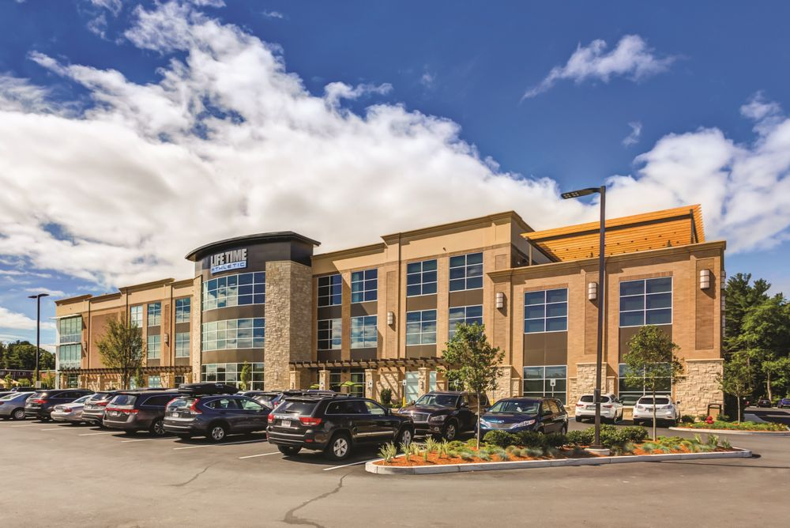

Resume
- Brooklyn Water Bagels from April 2016-May 2016: This was my first ever job. I liked it at first and the pay was good but eventually I had to quit because it wasn't the right job for me and I had gotten another job.
- Pilgrim Day Camp from Summer 2014-Summer 2017: I had a great time at this job. Really gave me an understanding of responsibility at jobs because I had to keep track of little kids all day.
- Kids Academy Team Member at Lifetime Fitness from May 2016-July 2018: I love working with children and when a Lifetime opened in my town, this was my opertunity. I had a great time here and made a lot of friendships and was able to improve my willing to work.
- Dick's Sporting Goods from April 2018-present. I really enjoy this job a lot because I love sports. I've never worked more hours at a job and I'm really glad I did. I hope that I am able to work here throughout college and even in the one in Bangor.
 